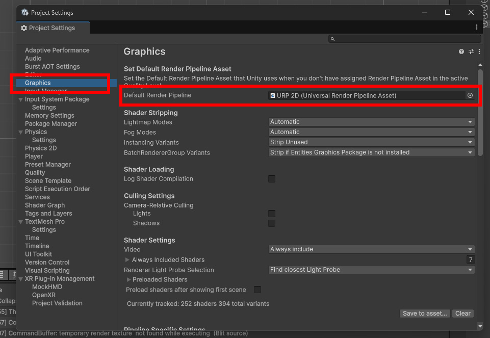
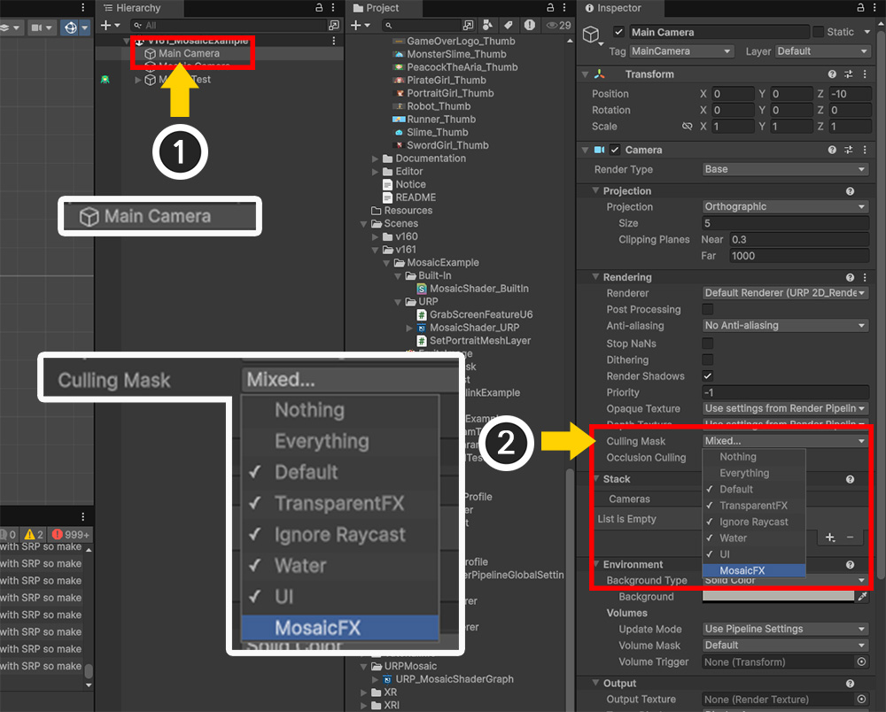
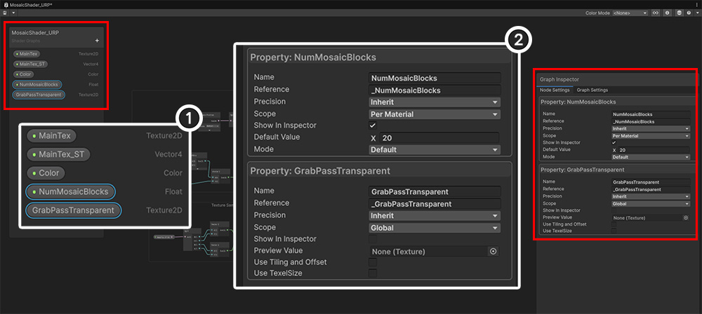
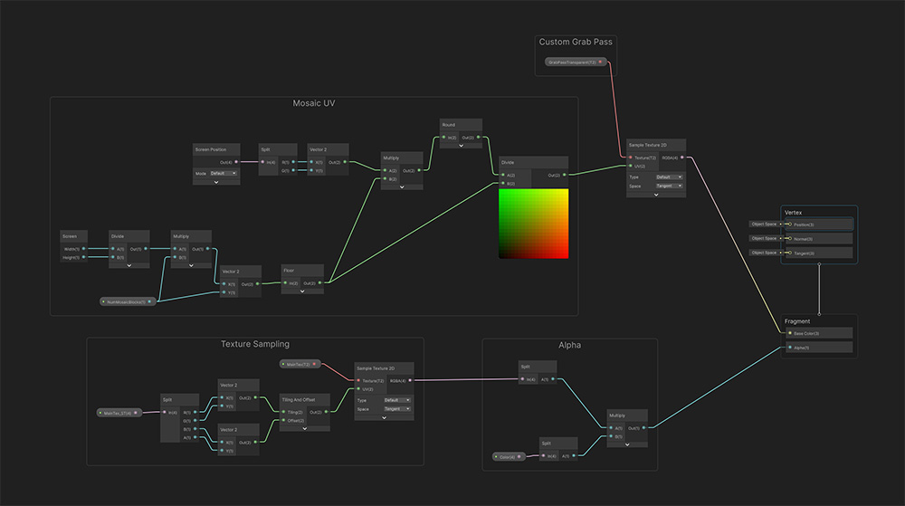
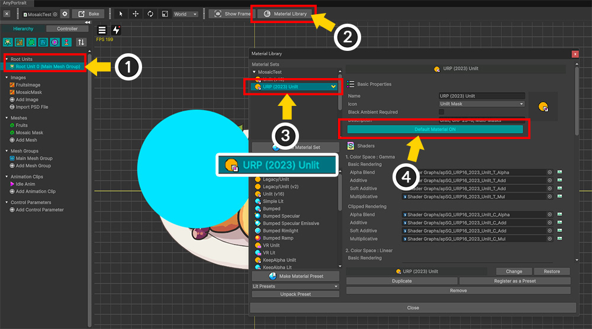
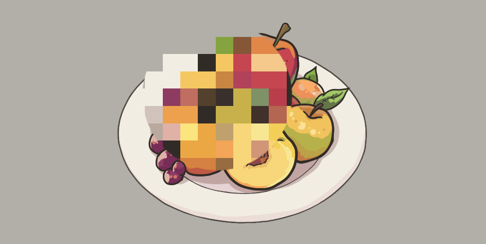

AnyPortrait > マニュアル > 「Grab Pass」を使ったモザイク効果
「Grab Pass」を使ったモザイク効果
「AnyPortrait」および「Unity」を利用して特殊な効果を実装するためにテクスチャタイプの「現在レンダリングされている画面」が必要な場合があります。
「Unity」では、画面をテクスチャの形にするために「Grab Pass」というものを利用します。
このページでは、多くのユーザーにお問い合わせいただいた「モザイク効果」の実装方法を例にして、「Grab Pass」について説明します。
「Grab Pass」とレンダリングパイプライン
モザイクなどの効果を実現するには、モザイク領域に対応するメッシュがレンダリングされる直前の画面テクスチャを取得する必要があります。
つまり、レンダリングが進行するプロセスをしばらく停止し、その時点までのフレームバッファを一時的なテクスチャにコピーする必要があります。
それを行うのが「Grab Pass」です。 (Unityマニュアル)
そしてこの「Grab Pass」で生成された「Grab Texture」を利用すれば、画面効果を簡単に実装できます。
ちなみに、「Grab Pass」を使って効果を実装する方法は、プロジェクトの「レンダリングパイプライン」によって異なります。

「Built-In レンダーパイプライン」では、メッシュがレンダリングされる途中で自由に「Grab Pass」を呼び出して「Grab Texture」をインポートできます。
これは、「Grab Texture」を必要とするシェーダ（ここではモザイク効果シェーダ）に「Grab Pass」を指定すると、その瞬間に「Grab Texture」が生成されるためです。

ちなみに「URP」はデフォルトで「Grab Pass」をサポートしていません。
「Grab Pass」と同様の役割を果たすシェーダの機能はありますが、これは「不透明メッシュ（Opaque）」のみレンダリングされた結果を持っているので、この場合には合いません。
そのため、「Grab Pass」の役割を果たす「Renderer Feature」を直接作成する必要があります。
ただし、「Renderer Feature」はメッシュのレンダリング中に呼び出すことはできず、カメラとレンダリングイベント単位でのみ呼び出すことができます。
したがって、「モザイク前までのメッシュのレンダリング結果」を取得するには、カメラとレイヤーを分離する必要があります。
Built-Inレンダリングパイプラインで効果を実装

上記のように例を設定しました。
モザイク領域になるイメージとメッシュを追加し、「Mosaic Mask」という名前を設定しました。
それでは、モザイク効果をレンダリングするシェーダを作成しましょう。 (カスタムシェーダの作成)
Shader "Custom Shader/Mosaic Shader - BuiltIn"
{
Properties
{
_Color ("2X Color (RGBA Mul)", Color) = (0.5, 0.5, 0.5, 1.0)
_MainTex ("Main Texture (RGBA)", 2D) = "white" {}
// モザイクブロックの数（Y軸基準）
_NumMosaicBlocks ("Number of Mosaic Blocks (Y-Axis)", float) = 10.0
}
SubShader
{
Tags{ "RenderType" = "Transparent" "Queue" = "Transparent" "PreviewType" = "Plane" }
Blend SrcAlpha OneMinusSrcAlpha
LOD 200
// Grab Pass を呼び出して Grab Texture を取得します。
GrabPass { "_CustomGrabTexture" }
Pass
{
Tags { "LightMode" = "ForwardBase" }
ZWrite Off
CGPROGRAM
#pragma vertex vert
#pragma fragment frag
#include "UnityCG.cginc"
struct appdata
{
float4 vertex : POSITION;
float2 uv : TEXCOORD0;
};
struct v2f
{
float2 uv : TEXCOORD0;
float4 vertex : SV_POSITION;
// Grab Texture用のUVを計算して配信するためのセマンティック
float4 grabPos : TEXCOORD1;
};
sampler2D _MainTex;
float4 _MainTex_ST;
half4 _Color;
// Grab Pass で生成された Grab Texture
sampler2D _CustomGrabTexture;
// モザイク数プロパティ変数
float _NumMosaicBlocks;
v2f vert ( appdata v )
{
v2f o;
o.vertex = UnityObjectToClipPos( v.vertex );
o.uv = TRANSFORM_TEX( v.uv, _MainTex );
// Grab UVを計算します。
o.grabPos = ComputeGrabScreenPos( o.vertex );
return o;
}
fixed4 frag ( v2f i ) : SV_Target
{
fixed4 col = tex2D( _MainTex, i.uv );
// 「Aspect Ratio」を計算して、X軸のモザイクブロックの数を計算します。
float aspect = _ScreenParams.x / _ScreenParams.y;
float2 nBlocks = floor ( float2 ( _NumMosaicBlocks * aspect, _NumMosaicBlocks ) );
// モザイクUVを計算してGrab Textureから色を取得します。
fixed2 mosaicUV = round( i.grabPos.xy * nBlocks ) / nBlocks;
fixed4 grabCol = tex2D( _CustomGrabTexture, mosaicUV );
col.rgb = grabCol.rgb;
col.a *= _Color.a;
return col;
}
ENDCG
}
}
}
このシェーダは「Grab Texture」を取得し、メッシュの「RGB」に適用してレンダリングを行います。
このとき、「round」関数と「_NumMosaicBlocks」プロパティを使用して、UVが特定のサイズ単位で変化するようにしました。

もう一度「AnyPortrait Editor」に戻ります。
(1) 「メッシュグループ」を選択した状態で、「Mosaic Mask」メッシュを選択します。
(2) 「Shader Setting」オプションで「Material Set」の値を「Custom Shader」に変更します。

(1) 前に作成したモザイクシェーダを割り当てます。
(2) 上記のシェーダコードの「_NumMosaicBlocks」プロパティの値をここで設定します。 「Add Custom Property」ボタンを押して、プロパティの名前、タイプ、値を設定します。

「Bake」をしてシーンに戻ってゲームを実行すると、上記のようにモザイク効果が適用されたことがわかります。
「Mosaic Mask」メッシュが「AnyPortrait」内のオブジェクトなので、透明にしたりアニメーションに合わせて自由に動かしたりできます。
URPで効果を実装
「URP」では、シェーダを含む次の3つのスクリプトを作成する必要があります。
1. 「Grab Pass」を再現する「Renderer Feature」
：「URP」には「Grab Pass」はありません。
そのため、「Renderer Feature」を直接作成して「Grab Pass」を実装する必要があります。
2.メッシュのレイヤーを変更するスクリプト
：「Renderer Feature」は、カメラやレイヤーが変わると動作します。
したがって、「一般メッシュ」と「モザイクマスクメッシュ」が別々のレイヤーを持つようにする必要があります。
3.モザイクシェーダーグラフ
：シェーダーグラフ（Shader Graph）を使用してモザイクシェーダーを作成する必要があります。

まず、「Renderer Feature」を作成して「Grab Pass」を実装しましょう。
ちなみに、「Renderer Feature」の「API」は「URP 13」から大きく変わり、互いに互換性がありません。
したがって、「Renderer Feature」を作成する前に、「URPのバージョン」を確認する必要があります。
(関連公式マニュアル)
(1) 「Unity」の「Package Manager」を開き、「Packages」を「In Project」に設定します。
(2) インストールされた Unity のパッケージが表示されます。その中から「Universal RP」を選択します。
(3) バージョンを確認してください。上の画像では「12.1.1」なので、「URP 13」より前の方法で作成されたスクリプトが必要です。
このページでは「Renderer Feature」を詳しく説明するのではなく、オープンソースとして作成された外部の開発者のスクリプトを活用してみます。
「URPのバージョン」が「13より前」の場合は、次のリンクから「Grab Pass用Renderer Feature」スクリプトを入手できます。
RefsaのGrabScreenFeature （MIT License） : Githubページ, コピーをダウンロード
「URPバージョン」が「13またはそれ以降のバージョン」の場合は、次のリンクから「Grab Pass用Renderer Feature（Unity 6を含む）」スクリプトを入手できます。
特に、この開発者は2つのバージョンの「Renderer Feature」を実装しました。
「Unity 6」の「Render Graph」の導入で「API」が異なることになりました。
- 「Render Graph」を使用する場合：「GrabScreenFeatureRenderGraphAPI.cs」
- 「Render Graph」を使用しない場合：「GrabScreenFeatureU6.cs」
SmajlovyccのGrabPassU6 （MIT License） : Githubページ, コピーをダウンロード

「URPバージョン」に合わせて「Renderer Featureスクリプト」を用意したら、プロジェクトでURPを設定します。
「Project Settings > Graphics > Default Render Pipeline」で「URP アセット」を作成して指定します。
「Unity」のバージョンによっては、「プラットフォーム別のレンダーパイプライン」も設定する必要があります。

「Unity 6」以降では「Render Graph」という新機能が追加されており、この機能の使用可否によって「Renderer Feature」の「API」が変わります。
「Render Graph」のスクリプトを使用していない場合は、「Compatibility Mode」を有効にして、既存のAPIで作成された「Renderer Feature」を使用できます。
このオプションをオンにすると、「[レンダリンググラフ」」は無効になります。

それでは、「Renderer Feature」を適用してみましょう。
(1) プロジェクトに適用されたURPアセットの「URP Renderer Data」アセットを選択します。
(2) 「Add Renderer Feature」ボタンを押して、先にオープンソースからダウンロードしたり、自分で作成した「Grab Pass」用の「Renderer Feature」を選択します。

「Grab Pass」用「Renderer Feature」を追加しました。
一部のプロパティを確認または変更します。
1. Texture Name
：これは「Grab Texture」の名前です。
この値はモザイク効果のためのシェーダーグラフで使用されるので、名前を覚えておいてください。
必要に応じて変更できます。
2. Layer Mask
：「Grab Texture」に含めるオブジェクトのレイヤーを指定します。
「None」や「Everything」の場合、正常に動作しないため、モザイクに含める対象レイヤーのみを選択して指定します。
ここでは「Default」レイヤのみを指定しました。
以前、「一般的なメッシュ」と「モザイクマスクのメッシュ」は区別され、レンダリングされる必要があることを説明しました。
したがって、レイヤーとカメラを分離して「モザイクマスクメッシュ」を別々にレンダリングするようにする必要があります。

(1) 「Project Settings > Tags and Layers」を開きます。
(2) 「Layers」項目の空欄に「MosaicFX」という名前のレイヤーを作成します。

(1) キャラクターをレンダリングする既存のカメラ（「Main Camera」）を複製し、「Mosaic Camera」という名前を設定します。 2台目のカメラからは「Audio Listener」コンポーネントも削除します。
(2) 「Render Type」を「Overlay」に変更します。
(3) 「Culling Mask」の値から「MosaicFX」レイヤーのみを選択します。

(1) 元のカメラである「Main Camera」をもう一度選択します。
(2) 「Culling Mask」の値から「MosaicFX」レイヤーを除外します。

(3) 「Stack > Cameras」で「Mosaic Camera」を登録します。
「モザイクマスクメッシュ」を区別してレンダリングできるようにシーン構成が終了しました。
しかし、「モザイクマスクメッシュ」は「AnyPortrait」キャラクタ内にあるため、他のメッシュと同じレイヤーを持ちます。
したがって、次のスクリプトを新しく作成して、そのメッシュを「MosaicFX」レイヤーと「Mosaic Camera」でレンダリングするようにする必要があります。
using UnityEngine;
using AnyPortrait;
public class SetPortraitMeshLayer : MonoBehaviour
{
public apPortrait portrait; // 対象となるapPortrait
public string layerName = "Default"; // 割り当てるレイヤーの名前
public string[] meshNames; // レイヤーを指定するメッシュのメッシュグループ内の名前
void Start()
{
SetPortraitMeshLayers();
this.enabled = false;
}
// ターゲットであるメッシュを見つけてレイヤーを変更する関数
private void SetPortraitMeshLayers()
{
int nMeshNames = (meshNames != null) ? meshNames.Length : 0;
if ( nMeshNames == 0 ) { return; }
// apPortraitの初期化が行われていない可能性があるため、ここで初期化を試みます。
portrait.Initialize();
// 入力されたレイヤーの名前をint型変数に変更します。
int layer = LayerMask.NameToLayer( layerName );
for ( int i = 0; i < nMeshNames; i++ )
{
string meshName = meshNames[i];
apOptTransform targetTransform = portrait.GetOptTransform(meshName);
if ( targetTransform == null ) { continue; }
// ターゲットのレイヤーを変更する関数を呼び出します。
SetGameObjectLayer(targetTransform.gameObject, layer);
}
}
// 再帰的にターゲットオブジェクトと子オブジェクトのレイヤーを変更します。
private void SetGameObjectLayer(GameObject targetObject, int layer)
{
if ( targetObject == null ) { return; }
targetObject.layer = layer;
// 子オブジェクトのレイヤーも変更します。
int nChildren = targetObject.transform.childCount;
if ( nChildren == 0 ) { return; }
for ( int i = 0; i < nChildren; i++)
{
// 再帰的に呼び出しを行います。
SetGameObjectLayer(targetObject.transform.GetChild(i).gameObject, layer);
}
}
}

(1) スクリプトを適用する新しい「GameObject」を作成します。
(2) 作成したスクリプトを追加し、値を設定します。
- Portrait：対象キャラクターを指定します。
- Layer Name：モザイクマスクメッシュがレンダリングされるレイヤー「MosaicFX」を入力します。
- Mesh Names：モザイクマスクメッシュのメッシュグループ内の名前を入力します。
最後に「モザイクシェーダーグラフ」を作成します。

新しい「Sprite Unlit, Transparent, Alpha Blend」タイプのシェーダーグラフを作成します。
「AnyPortrait」用のシェーダグラフを作成する方法については、「関連ページ」で見ることができ、ここではモザイク効果関連プロパティだけを紹介します。
(1) 基本プロパティに加えて、「_NumMosaicBlocks（Float）」、「_GrabPassTransparent（Texture2D）」プロパティを追加します。
(2) これら 2 つのプロパティの属性を次のように設定します。
1. _NumMosaicBlocks
：モザイクブロックの数。
プロパティの名前は、前述の「Built-In」のモザイクシェーダプロパティと同じであり、「AnyPortrait」キャラクタ内でモザイクマスクメッシュが値を渡すことができます。
2. _GrabPassTransparent
：これは「Grab Texture」のプロパティ名です。
前述の「Grab Pass」として追加した「Renderer Feature」の「Texture Name」の値と同じである必要があります。
「Show In Inspector」（またはバージョンに応じて「Exposed」）オプションを無効にする必要があります。
「Scope」も「Global」に変更してください。

上の画像のようにシェーダーグラフを完成させます。 (大きな画像リンク)
「Built-In」の例でのモザイクシェーダをグラフ形式で書き直すと思います。

「URP」用のモザイクシェーダを「AnyPortrait」キャラクタに適用します。
(1) 「Mosaic Mask」メッシュを選ぶ。
(2) 「Built-In」での設定が完了した状態であれば、「Custom Shader」に先ほど作成した「URP用モザイクシェーダグラフアセット」を割り当てます。
（「Custom Shader」オプションが設定されていない場合は、「Built-In」の実装説明の該当部分を確認してください。）

(1) 「ルートユニット」を選択します。
(2) 「Material Library」ボタンを押します。
(3) 「URP用マテリアルプリセット」から「マテリアルセット」を作成して選択します。
(4) 「Default Material」ボタンを押して「ON」状態にします。

(1) 「Bake」ボタンを押します。
(2) 「設定」タブを選択します。
(3) 「Render Pipeline」の値を「Scriptable Render Pipeline」に変更します。

「Bake」をしてゲームを実行すると、「URP」でもモザイク効果が正常に動作することがわかります。